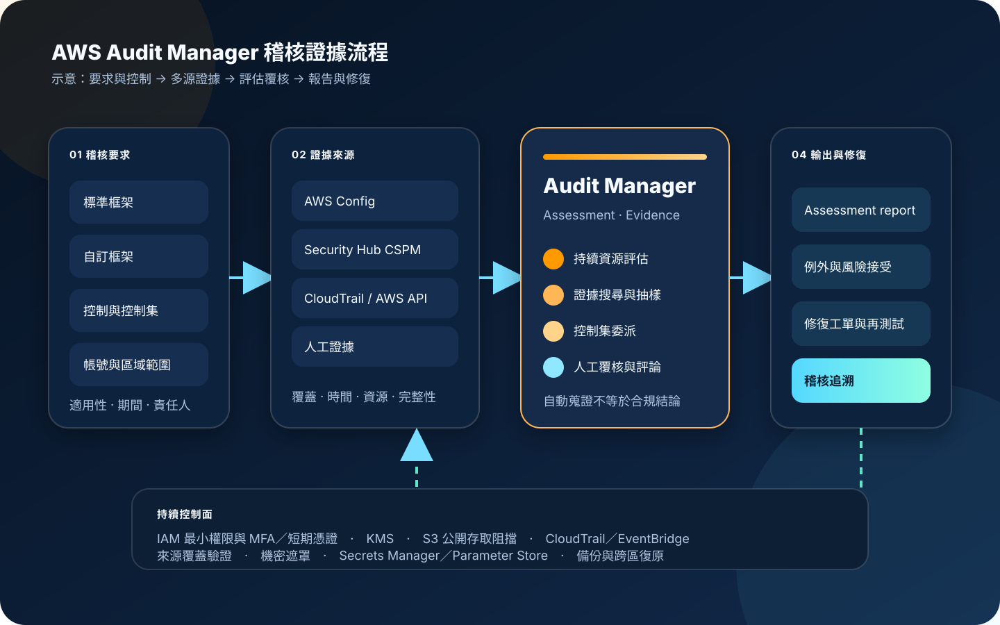

AWS Audit Manager：持續蒐集稽核證據
AWS Audit Manager 將框架、控制、AWS 資源與證據來源組成持續評估流程，自動整理 AWS Config、Security Hub CSPM、CloudTrail、AWS API 與人工上傳的證據。服務能減少蒐集與編排證據的重複工作，但不會自行判定組織已符合法規，也不能取代法務、稽核人員與控制擁有者的專業覆核。
作者：Dr. William｜查閱與發布：2026-11-09
服務定位
AWS Audit Manager 協助組織持續評估 AWS 使用情況，依標準或自訂框架建立 assessment，將控制與資料來源對應，再把蒐集結果轉為可供稽核閱讀的 evidence。稽核擁有者可覆核證據、委派控制集給領域負責人，最後挑選相關證據產生 assessment report。
服務適合處理「多帳號證據分散」「每次稽核都重複匯出設定與活動紀錄」「控制與技術資料來源缺少對應」「稽核期間難以追蹤證據責任人」等問題。它不保證來源服務已完整啟用，不會替組織解釋法律義務，也不會把 inconclusive 自動等同通過或失敗。
核心概念與服務邊界
結構與評估
- Framework：以標準或自訂框架整理控制集；預建框架提供起點，不代表自動取得認證。
- Control：描述要證明的控制要求、測試資訊與證據來源；可使用 AWS 管理或客戶管理來源。
- Assessment：指定框架、帳號範圍、擁有者與報告目的地後，持續執行資源評估與證據蒐集。
- Resource assessment：針對評估範圍內個別資源蒐集、儲存與管理證據，也是定價的重要計量基礎。
- Delegation：稽核擁有者可把控制集委派給領域負責人覆核，而非把整個評估完全開放。
證據與輸出
- Automated evidence：可來自 AWS Config、Security Hub CSPM、CloudTrail 與 AWS API 組態快照。
- Manual evidence：可從 S3 匯入、由瀏覽器上傳，或輸入風險問卷文字回應。
- Evidence finder：依評估、日期、控制、資源與合規狀態搜尋證據，跨帳號使用時需配合委派管理。
- Assessment report：彙整被選取的證據與明細連結；報告不會替稽核人員判定證據是否足以證明合規。
- Inconclusive：表示無法自動評估，常見於來源未啟用、API／CloudTrail 證據或人工證據，必須人工判讀。
適合與不適合的使用情境
適合
- 多帳號、多區域環境需要以一致框架持續蒐集 AWS 組態、活動與安全檢查證據。
- 內部稽核、風險與合規團隊需要把控制要求對應到 AWS Config、Security Hub CSPM、CloudTrail 或 AWS API。
- 控制擁有者分散在資安、平台、網路與應用團隊，需要委派、評論、覆核及追蹤流程。
- 同一批技術證據需要支援多個框架，並保留來源、時間與資源層級的追溯關係。
- 稽核前需要持續找出證據缺口，而不是在查核截止日前才人工收集大量截圖與試算表。
不適合或不能單獨完成
- 期待選取預建框架後即可取得法規認證、法律保證或外部稽核意見。
- 來源服務未覆蓋所有帳號與區域，卻把「沒有證據」解讀為「沒有風險」。
- 主要控制落在地端、SaaS、紙本程序或人工核准，卻不規劃人工證據與外部 GRC 整合。
- 需要即時阻擋未授權活動、隔離資源或自動修復；Audit Manager 主要負責證據與稽核工作流程。
- 缺少控制擁有者、例外管理、證據品質規則與稽核保存政策，只想把所有資料集中後直接交付。
示意故事案例：多帳號存取控制年度稽核
以下為示意案例，不代表特定企業或正式部署。 一家數位服務公司需要證明生產環境的管理存取採最小權限、MFA 與短期憑證，並確認 S3 公開存取、RDS 備份與 CloudTrail 稽核設定持續有效。過去由各團隊在稽核前人工擷取畫面，證據時間不一致，也無法確認截圖後設定是否變更。
公司在獨立稽核帳號設定 Audit Manager 委派管理員，以自訂框架整理身分、資料保護、備份與日誌控制。AWS Config 與 Security Hub CSPM 提供合規檢查，CloudTrail 提供組態變更活動，AWS API 提供週期性快照；程序核准與復原演練則由控制擁有者上傳人工證據。稽核擁有者把網路、資料庫及身分控制集分別委派給負責團隊。
覆核時發現某個帳號沒有啟用必要 Config 規則，相關控制沒有產生預期證據。團隊沒有把缺少 finding 當成通過，而是修正記錄範圍、補跑證據並記錄例外期間。產生報告前，只選入已驗證且符合查核期間的證據，將不合規項目連結到修復工單，並保留原始來源與報告雜湊供後續查證。

建置與運作流程
- 定義稽核目標：列出適用法規、內部政策、查核期間、帳號、區域、資源、控制擁有者與證據保存要求。
- 建立帳號邊界：透過 AWS Organizations 指定獨立帳號為 Audit Manager 委派管理員，避免日常工作負載帳號同時控制稽核證據。
- 建立人員角色：區分服務管理員、稽核擁有者、控制委派者、證據上傳者與只讀稽核人員，使用 IAM Identity Center、MFA 與短期憑證。
- 設定加密：選擇 AWS owned key 或客戶管理 KMS key；若採客戶管理金鑰，先驗證 key policy、grant、輪替、停用與災難復原程序。
- 啟用來源服務：在所有評估帳號與相關區域正確設定 AWS Config、必要規則、Security Hub CSPM 標準及 CloudTrail。
- 驗證來源覆蓋：比對 Organizations 帳號、區域、資源記錄器、Config 規則、Security Hub 控制與 CloudTrail 範圍，不能只確認服務顯示已啟用。
- 選擇或建立框架：從預建框架開始，逐項確認控制與組織義務是否一致；差異以自訂控制、人工證據或補償控制處理。
- 設計證據來源：優先採 AWS 管理來源；客戶管理來源要記錄負責人、映射、測試、版本與變更程序。
- 建立評估：設定框架、範圍、擁有者、報告 S3 目的地與通知；先以有限帳號試行，再擴展到整個組織。
- 抽樣驗證證據：比較 Audit Manager 證據與原始 Config、Security Hub、CloudTrail 或服務 API，確認時間、資源、帳號及判定條件。
- 委派控制集：只把必要控制集交給適當領域負責人，設定截止日、覆核標準、評論規則與升級程序。
- 處理 inconclusive：辨識來源未啟用、資料不支援自動判定或必須人工覆核的情況，禁止直接當成合規。
- 保護人工證據：上傳前移除不必要個資與機密，禁止 credential、Access Key、Secret Key、Token、密碼或 cookie；必要內容以 [REDACTED] 取代。
- 建立監控：以 CloudTrail 追蹤 Audit Manager API，以 EventBridge 監控評估、委派、每日證據、報告成功或失敗事件，再送往 CloudWatch／SNS 或工單。
- 產生與驗證報告：只選取查核期間內、來源清楚且完成覆核的證據，驗證報告目的地、加密、權限與檔案完整性。
- 追蹤修復：將缺口連結至工單與責任人，修正後重新蒐證；報告本身不應成為風險關閉的唯一依據。
- 演練復原與退出：測試 KMS 不可用、報告 S3 誤刪、來源中斷、委派帳號故障與停用服務時的資料保留及匯出流程。
成本、可用性與維運考量
Audit Manager 主要依每個帳號、每個區域執行的 resource assessment 數量計費。實際總成本還可能包含 AWS Config 記錄與規則評估、Security Hub CSPM、CloudTrail、S3 報告與人工證據儲存、KMS、EventBridge、CloudWatch、SNS，以及外部 GRC 或工單系統。估算時應按框架、控制、資料來源、帳號、區域與資源數拆分，不宜只看評估數量。
重疊框架可能對相同資源重複執行評估；過度寬廣的範圍、無效的舊評估與未使用控制會增加成本與覆核負擔。應先盤點共同控制、停用已結束的 assessment、限制帳號與區域範圍，並監控 resource assessment 使用量。Security Hub CSPM 的 consolidated control findings 可減少重複 finding 形成的獨特資源評估，但仍須確認其控制語意符合查核需求。
Audit Manager 是區域性服務，評估與來源設定必須逐區域規劃。可用性不能只看服務本身；AWS Config、Security Hub CSPM、CloudTrail、KMS、S3 報告目的地與 Organizations 整合任何一環異常，都可能造成證據缺口或報告失敗。重要稽核應保留原始證據來源、匯出副本、跨區復原設計與明確的手動替代程序。
官方文件指出自動與人工 evidence 自建立起保留兩年，而 assessments、assessment reports、自訂 controls 與自訂 frameworks 等客戶建立資源可持續保留，直到客戶刪除或依停用選項處理。組織仍須依自身法規、訴訟保存、S3 版本控制、Object Lock、備份與刪除核准制定完整政策，不能把服務預設保留視為全部法遵要求。
AWS Audit Manager 特有資安風險與控制
- 自動化造成錯誤保證：在報告與管理儀表板清楚標示 Audit Manager 協助蒐證、不提供合規認證；重大控制必須由具資格人員覆核。
- 來源未啟用卻呈現空白：持續比對 AWS Config、Security Hub CSPM、CloudTrail 的帳號、區域、規則與標準覆蓋，對無證據或蒐集失敗告警。
- inconclusive 被誤當通過：建立人工判讀規則、責任人與截止日；報告中分開呈現 compliant、non-compliant、inconclusive 與未覆蓋。
- 框架版本漂移：預建或 AWS 管理來源更新時執行變更評估，自訂框架與控制以版本、核准及測試管理。
- 證據映射錯誤：抽樣回查原始 Config、Security Hub、CloudTrail 與 API 資料，驗證資源、時間、控制條件及完整性。
- 委派權限過大：稽核擁有者與 delegate 職責分離，每個人只取得必要 assessment 或 control set；定期撤銷離職、轉調與逾期權限。
- 長期人員憑證：管理與覆核人員使用 IAM Identity Center、MFA 與短期憑證，禁止共用帳號及長期 Access Key。
- 人工證據洩密：上傳前資料分類、最小化與遮罩，禁止 credential、Access Key、Secret Key、Token、密碼及 cookie；S3 匯入來源同樣受控。
- 自由文字欄位洩漏：assessment 名稱、framework、control、tag 與 delegation comment 不放入客戶個資、機密或認證資訊。
- 報告 S3 公開存取：啟用 S3 Block Public Access、限制 bucket policy、使用 TLS、版本控制與必要的 Object Lock，並記錄下載活動。
- KMS 金鑰失效：限制 key policy 與 grant，監控停用和排程刪除；金鑰刪除或停用可能讓既有 Audit Manager 內容無法解密。
- 控制平面未稽核：建立組織層級 CloudTrail，監控 assessment、framework、control、delegation、report 與 encryption setting 變更。
- 事件通知遺漏：以 EventBridge 監控每日證據蒐集、評估與報告事件，配置重試、死信與工單升級，不只依賴電子郵件。
- 管理帳號爆炸半徑：以委派管理員執行評估，避免日常使用 Organizations management account；服務、KMS 與 S3 管理職責分離。
- Secrets 管理旁路：外部 GRC、通知或自動化整合所需機密使用 Secrets Manager／Parameter Store，不寫入控制描述、腳本、標籤或報告。
- 缺少網路隔離：支援情況下使用 VPC endpoint／PrivateLink、限制管理網路與出口，並避免報告下載經不受管裝置或公開網路散布。
- 證據與備份混淆：服務內保留不等於不可變備份；報告與必要人工證據應依政策備份，並測試跨區與帳號復原。
共同責任邊界
AWS 負責 Audit Manager 受管服務的底層基礎設施、服務可用性、框架與證據處理功能，以及與 AWS Config、Security Hub CSPM、CloudTrail、Organizations、KMS、S3 和 EventBridge 等 AWS 服務的整合。AWS 也負責雲端基礎設施的實體安全，並依服務設計保護 Audit Manager 內部資料儲存與傳輸。
客戶負責判定法規與控制是否適用，設定評估帳號、區域、框架、控制、資料來源、委派、報告目的地與保留政策，並驗證證據完整性。IAM 最小權限、MFA／短期憑證、網路隔離、公開存取阻擋、KMS 金鑰治理、Secrets Manager／Parameter Store、CloudTrail／CloudWatch、備份與跨區復原、人工證據去識別、法律判讀及修復追蹤均屬客戶責任。
上線與維運可執行檢查清單
- □ 已列出適用法規、內部政策、查核期間、帳號、區域、資源、控制擁有者與證據保存要求。
- □ 已指定獨立帳號為 Audit Manager 委派管理員，日常不以 Organizations management account 執行評估。
- □ 稽核擁有者、delegate、只讀人員、KMS 管理者與 S3 管理者已完成職責分離。
- □ 所有人員均透過 IAM Identity Center 或聯合身分使用 MFA 與短期憑證。
- □ IAM 政策已從 AWS 管理政策起步並依實際 assessment、control set 與操作縮限。
- □ AWS Config 已在所有必要帳號與區域記錄所需資源，相關規則與參數符合框架要求。
- □ Security Hub CSPM 已啟用必要標準、整合 Config，且組織帳號與 delegated administrator 設定一致。
- □ CloudTrail 已建立持續、多區域與必要跨帳號記錄，不只依賴 Event history。
- □ 預建框架已逐項核對適用性；自訂控制、補償控制與人工證據需求已有核准。
- □ assessment 範圍、擁有者、報告 S3 目的地、通知與停止條件均已明確設定。
- □ 已抽樣將 Audit Manager 證據回查原始 Config、Security Hub、CloudTrail 或服務 API。
- □ inconclusive、缺少證據與蒐集失敗都有責任人、人工覆核及升級期限。
- □ 人工證據與自由文字欄位不含 credential、Access Key、Secret Key、Token、密碼、cookie 或不必要個資。
- □ 報告與匯出 S3 已啟用 Block Public Access、加密、版本控制、存取記錄與適當保留。
- □ KMS key policy、grant、輪替、停用、排程刪除與復原依賴已完成測試。
- □ 外部整合機密使用 Secrets Manager／Parameter Store，沒有寫入控制、標籤、程式碼或報告。
- □ CloudTrail 已監控 Audit Manager API；EventBridge 已監控評估、委派、每日證據與報告失敗。
- □ CloudWatch／SNS／工單已對證據中斷、非預期權限變更、報告失敗與成本異常告警。
- □ 已停用結束或重複 assessment，並按帳號、區域、資源與框架監控 resource assessment 成本。
- □ 報告產生前只選取查核期間內、來源清楚、完成覆核且保留完整追溯資訊的證據。
- □ 不合規與例外項目已連結修復工單、責任人、期限、再測試與風險接受核准。
- □ 已演練 KMS 不可用、報告 S3 誤刪、來源中斷、委派帳號故障及跨區復原。
AWS 官方一手來源
- What is AWS Audit Manager?（查閱：2026-11-09）
- Understanding AWS Audit Manager concepts and terminology（查閱：2026-11-09）
- Enabling the recommended features and AWS services（查閱：2026-11-09）
- Identity and access management for AWS Audit Manager（查閱：2026-11-09）
- Data protection in AWS Audit Manager（查閱：2026-11-09）
- Assessment reports（查閱：2026-11-09）
- Logging AWS Audit Manager API calls with CloudTrail（查閱：2026-11-09）
- Monitoring AWS Audit Manager with Amazon EventBridge（查閱：2026-11-09）
- AWS Audit Manager Pricing（查閱：2026-11-09）
- AWS Audit Manager FAQs（查閱：2026-11-09）
- AWS Shared Responsibility Model（查閱：2026-11-09）
內容說明
本文依查閱日可用的 AWS 官方文件整理，作為基礎學習與架構討論材料；實際部署仍須依最新支援區域、框架版本、控制來源、帳號與區域範圍、resource assessment 數量、證據保留、定價、法遵意見與復原演練結果調整。